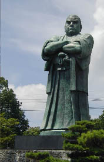
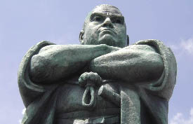
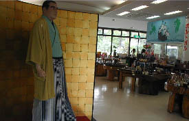
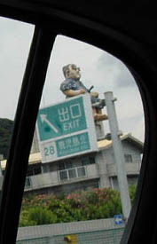

西郷公園/鹿児島県溝辺町
日本一離着陸が難しいと噂される鹿児島空港。
その鹿児島空港の真ん前にデーンとおわすのがご存じ西郷どん。
まるで鹿児島を訪れる人達に「おじゃったもんせでんだもした〜んでごわす」（意味不明）とメンチをきっているようだ。
大きさは10.5メートル、胴回りが5.6メートルという堂々とした体躯である。
ここ鹿児島では神さま仏さまと並ぶ扱いの西郷どん、ほとんど大仏といってもいいでしょう。
 
このデカい西郷どんがおわすのは西郷公園。
公園といってもこの西郷どんがおわす以外は土産物屋があるくらいのところだが。
この西郷どん、「現代を見つめる西郷隆盛像」というタイトルが付いている。
製作は昭和51年。しかし依頼者死亡のためしばらく富山県高岡市の鋳造会社倉庫で眠っていたらしい。
高岡といえば高岡大仏。同じところでつくったのだろうか。兄弟か？
その後、溝辺町のバックアップ等もあり昭和63年に現在の場所に完成したそうだ。メデタシ。

で、その土産屋で見かけた素敵な西郷どん。里見光太郎みたいっす。
お土産屋は一通り鹿児島の名産品を揃えてあるのでお土産ゲットがてら如何でしょうか。
←高速道路で見かけた西郷どん。これ、普通のマンションでしょ。
2001.7.
珍寺大道場 HOME